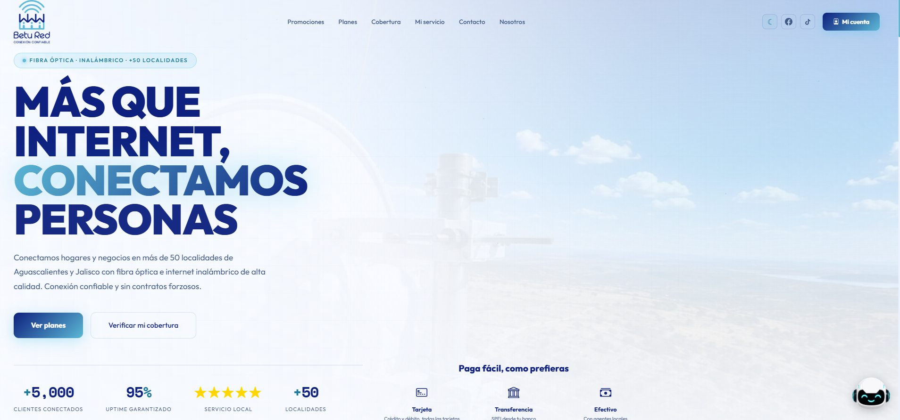
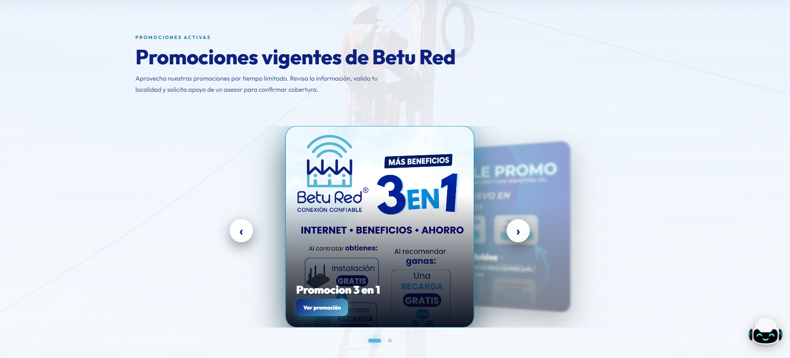
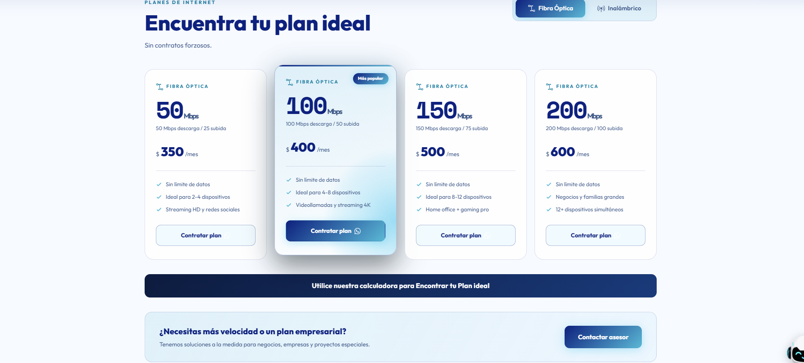
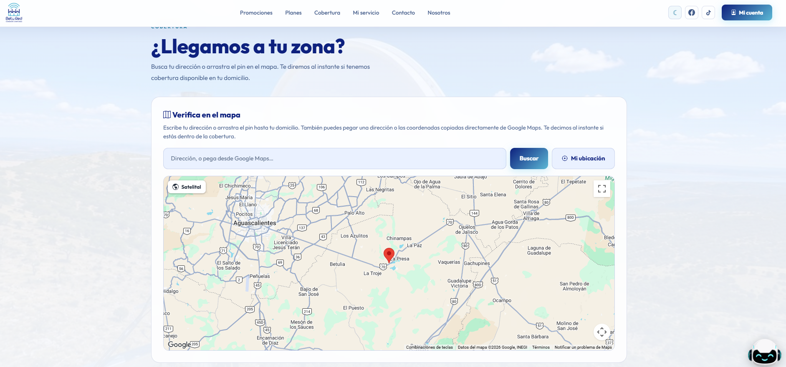
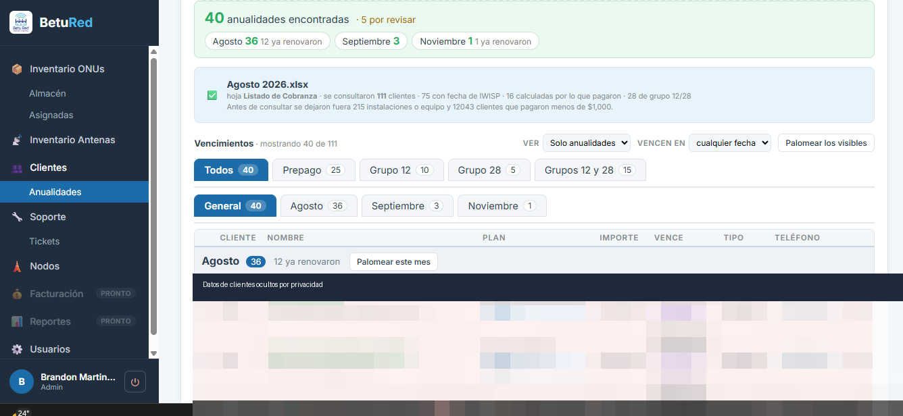
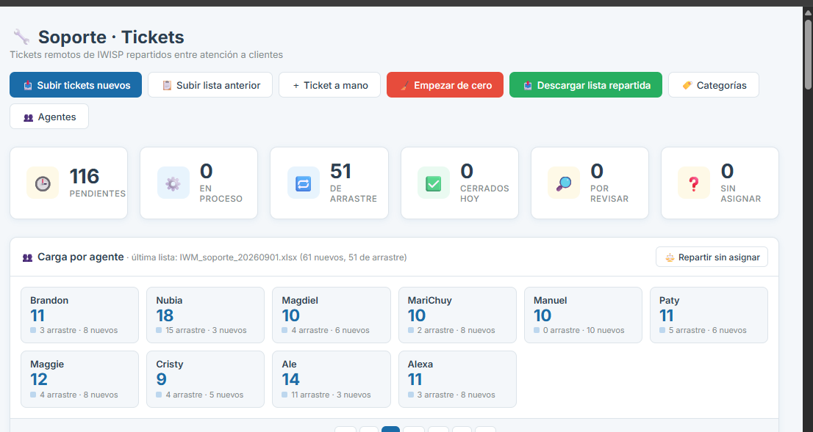
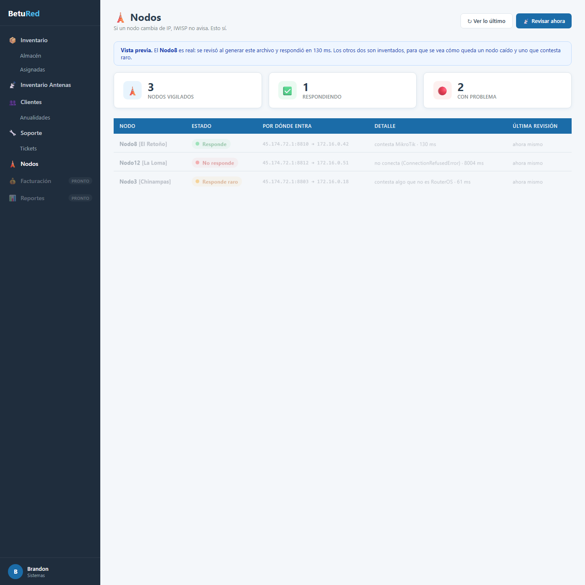

Desarrollo de plataformas y sistemas internos · BetuRed
Selección de proyectos que construí: en BetuRed, una página pública de captación, dos herramientas internas que reemplazaron trabajo manual repetitivo y un monitor de red — todas en producción, usadas a diario por el equipo. Y un proyecto personal: una tienda en línea con Flask.
Página pública · módulo sobre Odoo 19
Sitio donde un visitante verifica si hay cobertura en su localidad, compara planes, revisa promociones y solicita el servicio. Incluye un mapa de cobertura interactivo, una calculadora que recomienda plan según los aparatos que conecta, un portal de cliente y un panel de administración para editar contenido sin tocar código.




Capturas de la página en vivo.
Herramienta interna · FastAPI + PostgreSQL
Antes, una persona filtraba a mano la cobranza para saber a quién se le vencía la anualidad, y los avisaba uno por uno. Esta herramienta sube el Excel de cobranza, agrupa a los clientes por el mes en que empieza su anualidad, y envía la plantilla de WhatsApp aprobada — sin avisar dos veces a la misma persona.

Captura de la herramienta.
Herramienta interna · FastAPI + PostgreSQL
Reemplaza un proceso manual de filtrado y asignación. Sube el Excel de tickets de IWISP, descarta las categorías que no son soporte, deja para revisión los dudosos ("Otros"), y reparte los que quedan de forma pareja entre los agentes — el corte quedó reducido a: subir, revisar Otros, descargar la lista repartida.

Captura de la herramienta.
Servicio en segundo plano · Python + systemd
Cuando un nodo de la red cambia de IP, el sistema de gestión no avisa y alguien se entera cuando un cliente llama. Este monitor revisa cada 5 minutos si el equipo (MikroTik) sigue respondiendo en la IP que le corresponde según las reglas de NAT del router de borde, y lo muestra en un tablero.

Tablero del monitor (datos de ejemplo).
Aplicación web · Flask + MySQL
Tienda en línea de una zapatería: registro e inicio de sesión con roles, catálogo de productos, carrito, historial de pedidos y panel de administración para gestionar el inventario. Incluye una API y funciona como app instalable (PWA).
Repositorio: github.com/brandy4221/zapateria
{kind=link}
{kind=link}